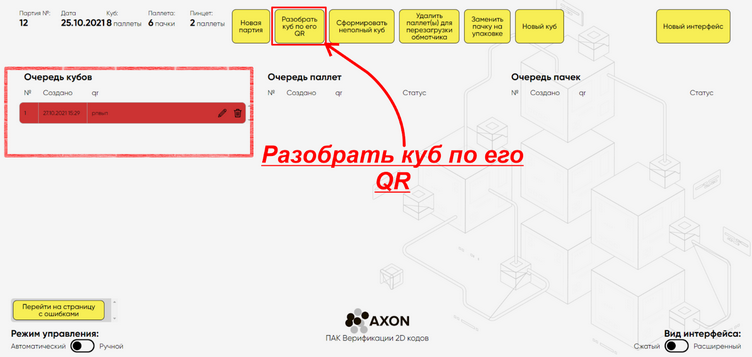
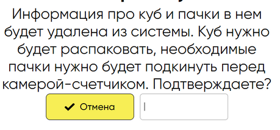

|
В Системе, некорректно собранный Куб окрашивается в красный цвет. Такой Куб следует разобрать и собрать вручную, нажав на кнопку Разобрать Куб по его QR”.

Порядок работы:
1.Нажмите на кнопку "Разобрать куб по его QR". 2.Подтвердите Ваши действия, просканировав мобильным считывателем штрих-кода, QR-код Куба, которого необходимо удалить. 3. 
3. После подтверждения разборки Куба, необходимо вернуть все пачки, на линию после аппликатора.
|